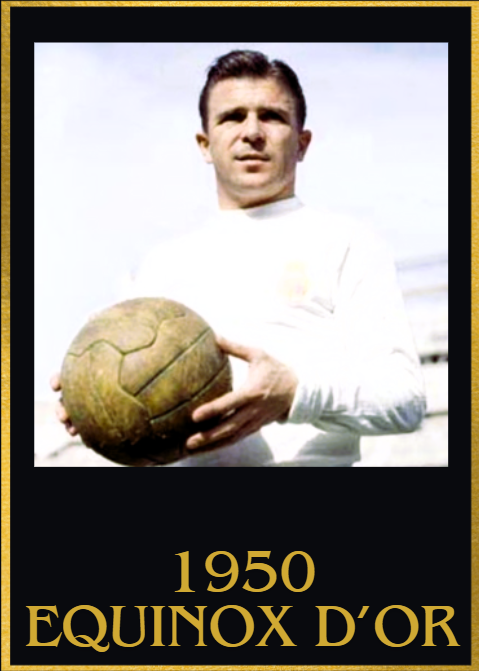
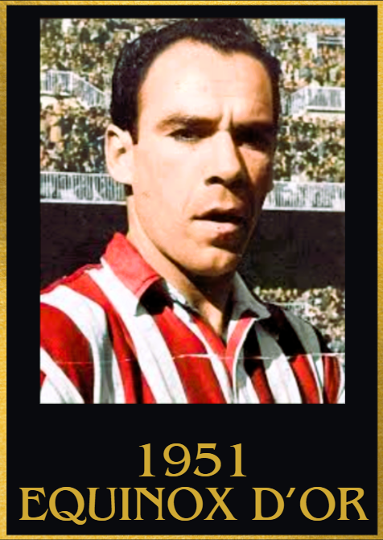
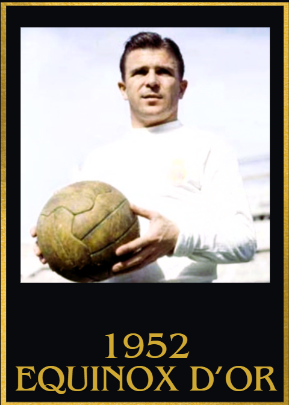
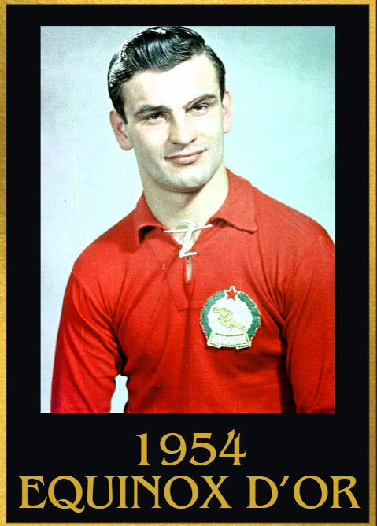
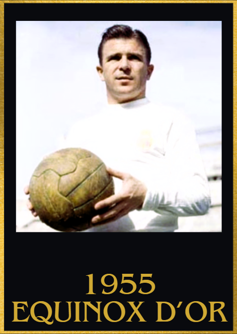
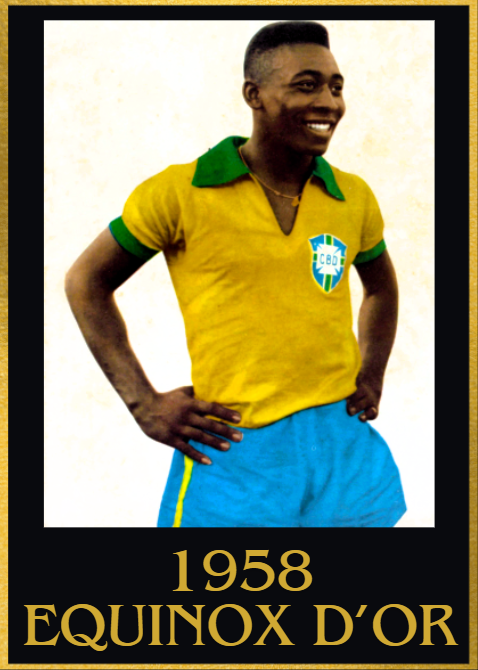
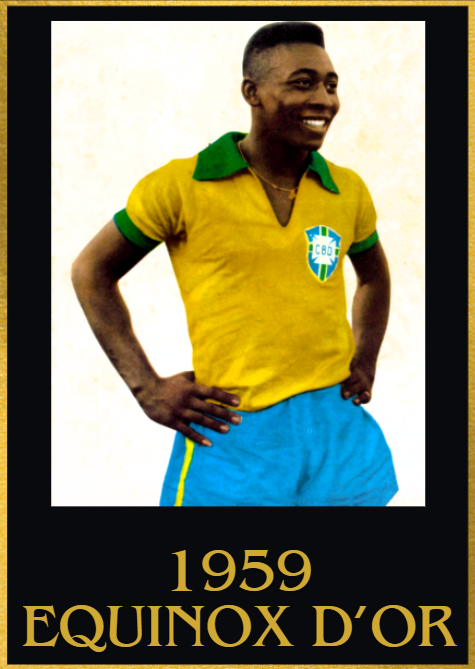

1950s Equinox d'Or Winners
1950
1st: Ferenc Puskas 🇭🇺 Budapest Honved
2nd: Ademir 🇧🇷 Vasco de Gama
3rd:Telmo Zarra 🇪🇸 Athletic Bilbao

Achievements
- 72 goal contributions
- Hungarian league top scorer
- Hungarian league winner
Key Moments
- Hat trick and an assist vs Textiles
- Hat trick vs Austria
- 4 goals and 1 assist vs Albania
- 5 goals and 2 assists vs Dorogi
- 5 goals and 1 assist vs Szeged
- Hat trick vs Szombathely
- 4 goals and 2 assists vs Dorogi
- 1 goal and 2 assists vs Austria
- 2 goals and 1 assist vs Soroskar, Szentlorinci and Salgotarjan
1951
1st:Telmo Zarra 🇪🇸 Athletic Bilbao
2nd:Gunnar Nordahl 🇸🇪 AC Milan
3rd:Ferenc Puskas 🇭🇺 Budapest Honved

Achievements
- 38 goal contributions
- Pichichi winner
Key Moments
- 1 goal vs defending la liga champions Atletico madrid
- 4 goals vs Espanyol and Switzerland
- Brace vs Espanyol and Real Madrid
- Hat trick vs Real Murcia
1952
1st: Ferenc Puskas 🇭🇺 Budapest Honved
2nd: Sandor Kocsis 🇭🇺 Budapest Honved
3rd: Laszolo Kubala 🇪🇸 Barcelona

Achievements
- Olympics winner
- 65 goal contributions
- Hungarian league winner
Key Moments
- 1 goal and 2 assists vs Csepel, Szombathely, Finland and Dozsa
- 4 goal contributions vs Salgotarjan and Poland
- Brace vs Vasas
- 3 goals and 1 assist vs Kinizsi
- 2 goals and 1 assist vs Suiza
- 2 assists vs Italy(in the Olympics)
- 4 goal contributions vs Turkey(in the Olympics)
- 1 goal and a hat trick of assists vs Sweden(in the Olympics)
- Game winning goal in the olympics final vs Yugoslavia
1953
1st: Ferenc Puskas 🇭🇺 Budapest Honved
2nd: Nandor Hidegkuti 🇭🇺 MTK Budapest
3rd: Laszolo Kubala 🇪🇸 Barcelona

Achievements
- Hungarian league top scorer
- 77 goal contributions
Key Moments
- 2 goals and 5 assists vs Piliscsabai
- 4 goals and 3 assists vs Elore
- 6 goals and 1 assist vs Oroshazi Kinizsi
- 2 goals and 1 assist vs Salgotarjan
- 4 goals and 1 assist vs Oroshazi Kinizsi
- 2 goals and 3 assists vs Szombathely
- 4 assists vs Szombathely
- 1 goal and 2 assists vs Czechoslovakia
- Hat trick vs Csepel
- 2 goals and 4 assists vs Postas
- 2 goals and 1 assist vs England
1954
1st:Sandor Kocsis 🇭🇺 Budapest Honved
2nd:Ferenc Puskas 🇭🇺 Budapest Honved
3rd:Fritz Walter 🇩🇪 FC Nürnberg

Achievements
- World Cup runner up
- World cup top scorer(11 goals, a record at the time)
- Hungarian league winner
- 78 goal contributions
Key Moments
- 2 goals and 3 assists vs Dorogi
- 2 goals and 1 assist vs Romania
- 3 goals and 1 assist vs Czechoslovakia
- Hat trick vs Szegedi Haladas
- 3 goal contributions vs Szombalthey
- 4 goal contributions vs Vasas
- 4 goals vs Diosgyori
- 3 goals and 2 assists vs Voros Lobogo
- 2 goals and 1 assist vs England in the World Cup
- 3 goals and 2 assists vs South Korea in the World Cup
- 4 goals and 1 assist vs West Germany in the World Cup
- Brace vs Brazil in the World Cup
- 2 goals and 1 assist vs defending champions Uruguay in the World Cup
1955
1st:Ferenc Puskas 🇭🇺 Budapest Honved
2nd:Alfredo Di Stefano 🇪🇸 Real Madrid
3rd:Sandor Kocsis 🇭🇺 Budapest Honved

Achievements
- 69 goal contributions
- Hungarian league winner
Key Moments
1 goal and a hat trick of assists vs Batonyi
4 goal contributions vs Salgotarjan and Vasas
3 goal contributions vs Wiener SC, Pecsi, Dozsa and Szolnok
2 goals and a hat trick of assists vs Salgotarjan
1956
1st: Alfredo Di Stefano 🇪🇸 Real Madrid
2nd:Raymond Kopa 🇫🇷 Stade de Reims
3rd:Juan Alberto Schiaffino 🇺🇾 AC Milan

Achievements
- 46 goal contributions
- Pichichi winner
- UEFA Champions league winner
Key Moments
- 4 goal contributions vs Celta Vigo
- 4 goal vs Espanyol
- 3 goal contributions vs Murcia, Jaen and Rapid Wien
- Hat trick and 2 assists vs Las Palmas
- 2 goal contributions vs AC Milan in UEFA Champions league semi finals
- Hat trick vs Real Zaragoza and Condal
- 1 goal vs Stade de Reims in the UEFA Champions league final
1957
1st: Alfredo Di Stefano 🇪🇸 Real Madrid
2nd:Pele 🇧🇷 Santos
3rd:Duncan Edwards 🏴 Manchester united

Achievements
- 41 goal contributions
- UEFA Champions league winner
- Pichici winner (broke the record with 31 goals in La Liga)
- La liga winner
Key Moments
- 4 goals vs Las Palmas
- 3 goal contributions vs FC Jaen and Athletic Bilbao
- Brace vs Barcelona
- Hat trick vs Netherlands, Sevilla and Celta Vigo
- Brace vs OGC Nice in the UEFA Champions League quarter finals
- 2 goal contributions vs Man united in the UEFA Champions League semi finals
- Game winning goal in the UEFA Champions League final vs Fiorentina
- Match winning goal vs Barcelona in La Liga
1958
1st:Pele 🇧🇷 Santos
2nd:Raymond Kopa 🇫🇷 Real Madrid
3rd:Didi 🇧🇷 Botafogo

Achievements
- 90 goal contributions
- World Cup winner
- Paulista top scorer
- Paulista winner
Key Moments
- 4 goals vs America RJ, Piracicaba and Corinthians
- 4 goals and 2 assists vs Nacional SP
- 3 goal contributions vs Guarani
- 5 goals vs Ipiranga
- Hat trick vs Noroeste, Botafogo and Juventus SP
- 3 goals and 2 assists vs Jabaquara
- 4 goals and 1 assist vs Comercial and Gurani
- Hat trick vs France in World cup semi finals
- 2 goals vs Sweden in the World Cup final
1959
1st:Pele 🇧🇷 Santos
2nd: Alfredo Di Stefano 🇪🇸 Real Madrid
3rd:Ferenc Puskas 🇭🇺 Real Madrid

Achievements
- 91 goal contributions
- Paulista top scorer
- Copa Sundamericano top scorer
- Copa America top scorer
- Copa America player of the tournament
Key Moments
- 3 goal contributions vs Chile, Flamengo, Sao Paulo, America SP, Piracibaba, Nacional SP, Sao Paulo and Ferroviaria
- Hat trick vs Paraguay, Juventus(brazil), Noroesta and Portuguesa RJ(twice)
- Hat trick and 1 assist vs XV de Jau, Chile and Palmeiras
- 4 goals and 1 assist vs America SP